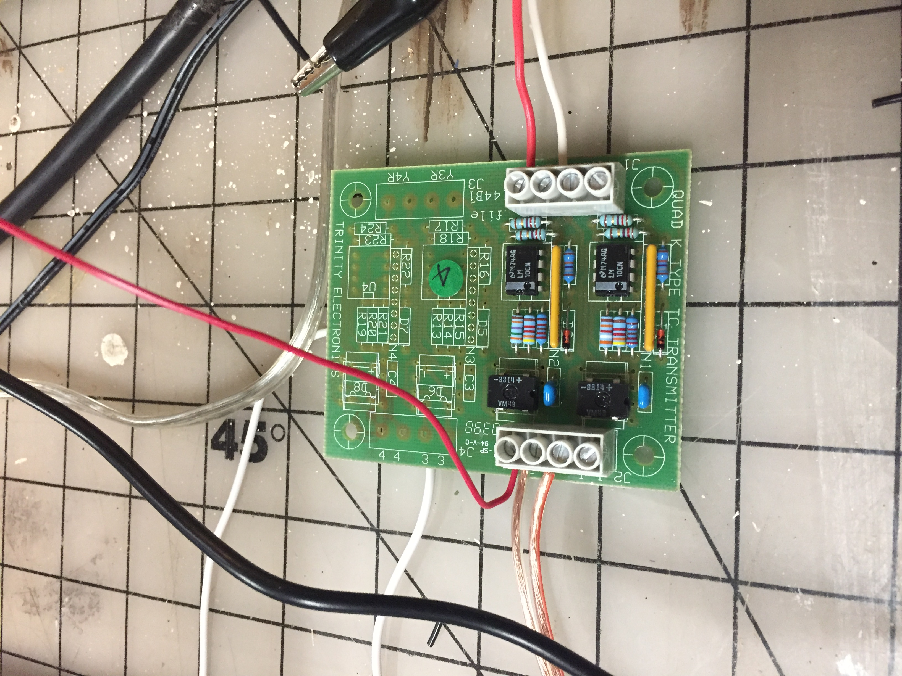

Last Days Before Project is Due!!
I had a lot of unexpected trouble getting the huzzah to read the thermocouple output. The output is only 1.2-1.5 millivolts at room temperature. I tried several amp options including: building an amp with a transistor; using an LM386 amp chip; and finally resorted to using a pre-amp that I had from a control system I use to work on frequently. The problem with the pre-amp is that it requires a 24vdc input voltage. Therefore, I had to incorporate the "complete" control mother board to get the correct voltage to the pre-amp. Photo below is the pre-amp.
Return to my home page.
This is the motherboard for the system that utilizes the pre-amp. At room temperature it has an output of about 750 milli volts:

Measurement of voltage across an led in the hotdog with 120vac on:

Transistor amp that did not help:
An Amp I have that takes a thermocouple input and outputs 1 millivolt per degree F of temperature:(this did not give a high enough output at room
temperature to break the 100 millivolt threshold required for the huzzah to work correctly using pin A2 to read an analog input voltage)
Sketch of hotdog resistance circuit: